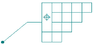
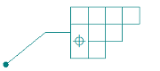
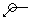
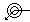

General tab (Feature Control Frame Properties dialog box)
To learn how to create a feature control frame using the General tab of the Feature Control Frame dialog box, see the Help topic, Define feature control frame content.
- Saved settings
-
Specifies the name for a new saved setting. Selecting the arrow lists the previously saved setting names.
Saved settings enable you to save content and formatting properties. You can apply saved settings to quickly format new feature control frames and to modify existing feature control frames.
Note:In documents where saved settings were created and saved prior to Solid Edge 2023, the legacy saved setting names are marked by an asterisk (*). To make changes to legacy saved settings, you must rename them and then save them. You then can delete the names with the asterisks. For more information, see Working with *legacy annotation saved settings.
- Save
-
Saves the information in the Content, Composite, All around symbol and All over symbol with leader boxes to the name displayed in the Saved settings box.
- Delete
-
Deletes the saved setting information associated with the name currently displayed in the Saved settings box.
Note:Saved settings are saved to text files in the \Program Files\Siemens\Solid Edge 2023\Template\Reports folder, so that you can share these files with other users. The text files are named for the annotation type, for example, DraftFCF.txt, DraftSTS.txt, and DraftEdgeCondition.txt.
- Content
-
The four boxes in this section specify the feature control frame content. The box in the first row defines the content of the top row of the feature control frame. You can use the second, third, and fourth boxes to specify additional rows in the feature control frame structure.
Note:Blank rows are not displayed.
- Composite
-
Selecting any of the three Composite check boxes activates a composite frame between the row where the box is checked and the row above it.
Example:Following are three composite feature control frame structures. The information in the first three columns explains how to generate the frame in the last column. The vertical lines are entered using the Divider symbol button, which you use to separate a row into compartments.
FCF Rows
Composite check box
Content box
This structure is displayed
(Row 1)
N/A
%PO||||

(Row 2)
|||
(Row 3)
||
(Row 4)
l
FCF Rows
Composite check box
Content box
This structure is displayed
(Row 1)
N/A
|||

(Row 2)
%PO||
(Row 3)
l
(Row 4)
(blank)
FCF Rows
Composite
check boxContent box
This structure is displayed
(Row 1)
N/A
%PO||||

(Row 2)
|||
(Row 3)
%PP||
(Row 4)
l
 Divider
Divider-
Places a dividing line between the individual compartments in a feature control frame. For example, you should place a divider between the primary datum and secondary datum compartments.
 Reference Text
Reference Text-
Selects text strings from annotations and drawing views for the purpose of inserting the information into other annotations, such as callouts, datum frames, feature control frames, and balloons.
For more information, see Create reference text.
 Symbols and Values
Symbols and Values-
Opens the Select Symbols and Values dialog box for you to generate the appropriate symbols and model-derived values without having to type the property text codes yourself. Examples of the types of symbols you can select include ± (plus minus), ° (degree), and ∅ (diameter). Examples of model-derived values include hole references, bend data, and weld beads.
- Geometric symbols
-
Displays the geometric symbols that you can place in a feature control frame. To see what the geometric symbols represent, hover over each button. Click the button for the symbol you want to insert in the Content box.
You can select the geometric symbols for Flatness, Straightness, Circularity, Cylindricity, Perpendicularity, Angularity, Parallelism, Profile of a Surface, Profile of a Line, Circular Runout, Total Runout, Position, Concentricity, and Symmetry.
- Material conditions
-
Displays the material condition symbols you can place in a feature control frame. To see what the material condition symbols represent, hover over each button. Click the button for the symbol you want to insert in the Content box.
You can select the material condition symbols for Maximum, Least, Regardless of Feature Size, and Reciprocity Condition.
- Tolerance zone
-
Displays the tolerance zone symbols you can place in a feature control frame. To see what the tolerance zone symbols represent, hover over each button. Click the button for the symbol you want to insert in the Content box.
You can select the tolerance zone symbols for Projected, Tangent Plane, Free State, Envelope Requirement, and Profile Unequally Disposed.
- Other
-
Displays other symbols you can place in a feature control frame. To see what the symbols represent, hover over each button. Click the button for the symbol you want to insert in the Content box.
You can select special symbols for Diameter, Degree, Between, and Statistical Tolerance.

All around symbol with leader-
Displays the all around symbol on feature control frames placed with a leader.
You can change the symbol size using the All around symbol size edit box on the Text and Leader tab.

All over symbol with leader-
Displays the all over symbol with a leader line on the callout. This option is not available when the All around symbol with leader check box is selected.
You can change the symbol size using the All around symbol size edit box on the Text and Leader tab.
- Show this dialog when the command begins
-
When set, displays the Feature Control Frame Properties dialog box automatically when you select the Feature Control Frame command. When cleared, you must select the Properties button on the command bar to open this dialog box.
The default is to show the dialog box.
- Preview
-
Shows you the result of your settings before you apply them.
How do I
Place a feature control frame or datum frameDefine feature control frame content
Example: Add symbols to a feature control frame
Save a feature control frame
Activate a saved feature control frame
Place a datum target
Learn more
Geometric tolerancingLook up more details
Manipulating feature control framesFeature Control Frame command
Feature Control Frame command bar
Feature Control Frame Properties dialog box
Datum Frame command
Datum Frame command bar
Datum Frame Properties dialog box
General tab (Datum Frame Properties dialog box)
Datum Target command
Datum Target command bar
Datum Target Properties dialog box
General tab (Datum Target Properties dialog box)